Youth Taking a Stand Against Addiction
Subjects
Local Community
Where
Poland
When
2025-2026
“Together Against Addictions” (Razem Przeciw Uzależnieniom) was a youth participation project implemented by Fundacja Patrz Globalnie, empowering young people to address the issue of alcohol abuse and its impact on their local community through education, research, advocacy, and creative action.
The project brought together 15 young participants, including young people directly or indirectly affected by addiction and participants with fewer opportunities. Through the project, they transformed their lived experiences and motivation for change into meaningful civic engagement.
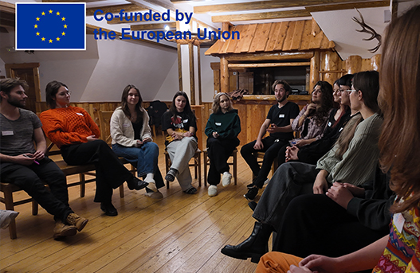
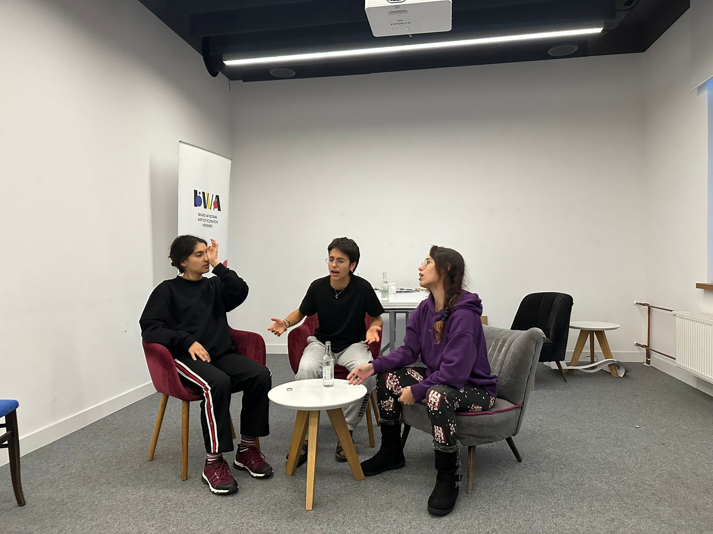
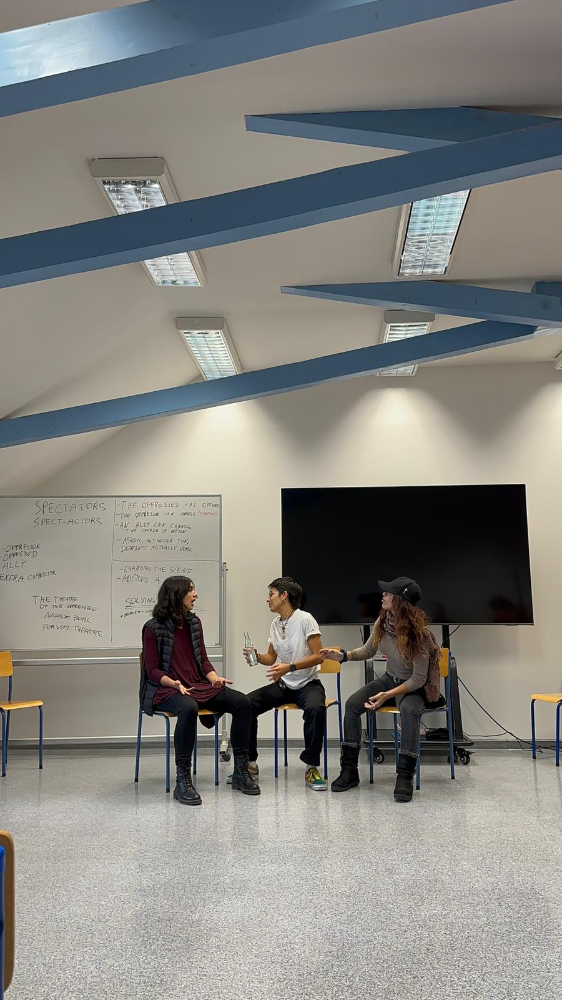
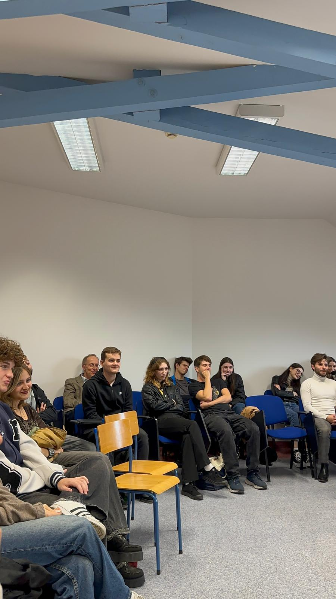
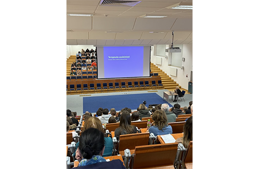
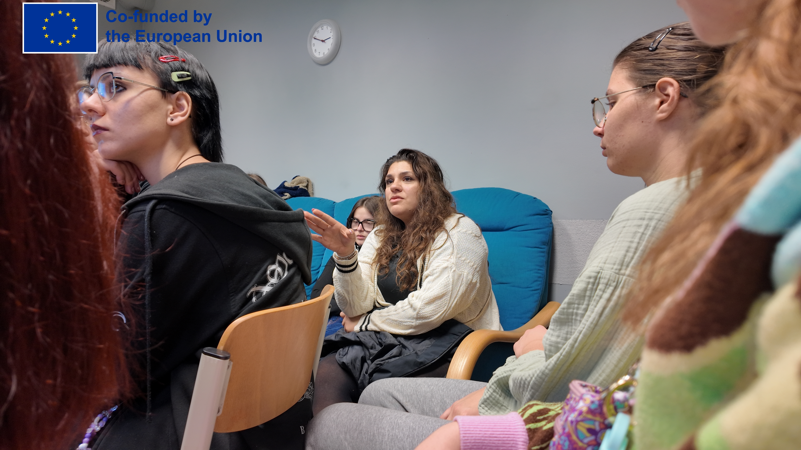
Participants first deepened their understanding of addiction, prevention,
and recovery through workshops with therapists, experts, and prevention
professionals. A mobility to Opole further expanded their knowledge
through meetings with addiction specialists and youth mental health advocates.
Building on this educational foundation, participants carried out
field research in Krosno to investigate alcohol availability and
alcohol-related risks in their local environment. They collected data,
conducted surveys, and created a digital Alcohol Danger Zone Map
highlighting areas associated with alcohol-related concerns in the city.
Using their research findings, the group developed advocacy
recommendations and entered into dialogue with local decision-makers
and public institutions. Their work contributed to wider local
discussions on alcohol policy and youth perspectives in community
decision-making.
A major creative element of the project was the development of a
Theatre of the Oppressed performance based on participants’ research and
personal experiences. The performance was presented publicly at the State
Academy of Applied Sciences in Krosno and BWA Art Gallery in Krosno,
engaging audiences in reflection and dialogue on addiction-related
issues.
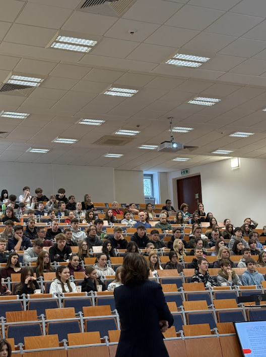
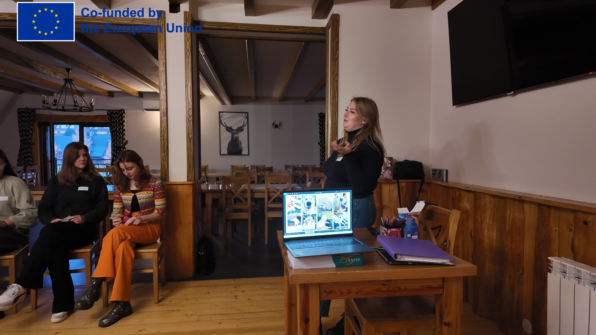
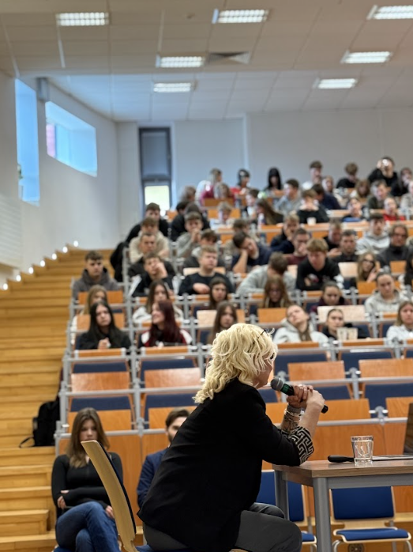
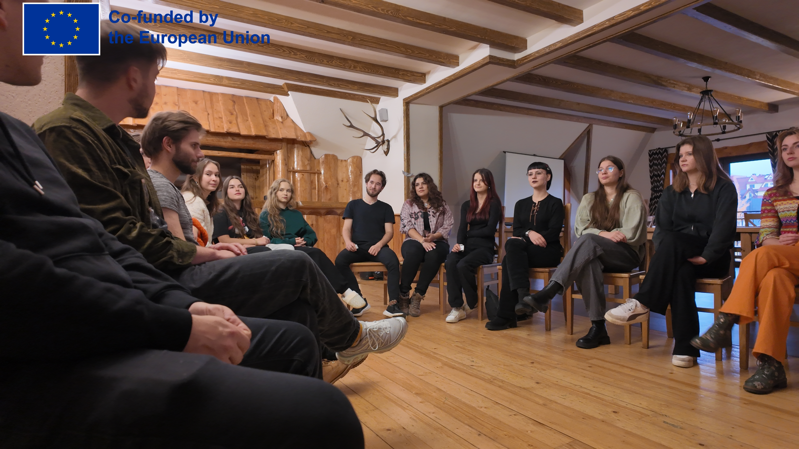
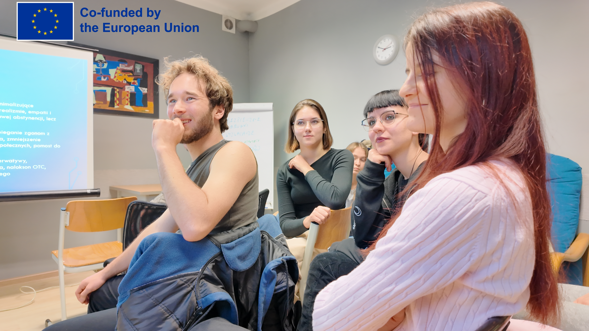
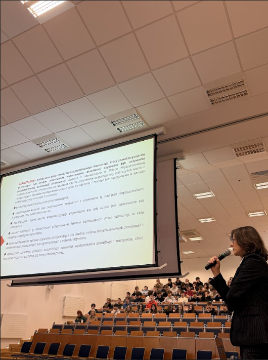
The project concluded with a large public conference on addiction prevention
attended by over 350 people, where youth presented their work
alongside experts and practitioners.
Through its combination of education, research, advocacy, and public
engagement, the project created lasting impact for participants and
the wider community while demonstrating the power of youth-led action
in addressing social issues.
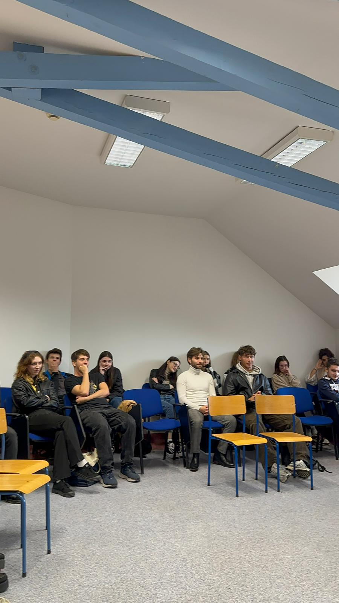
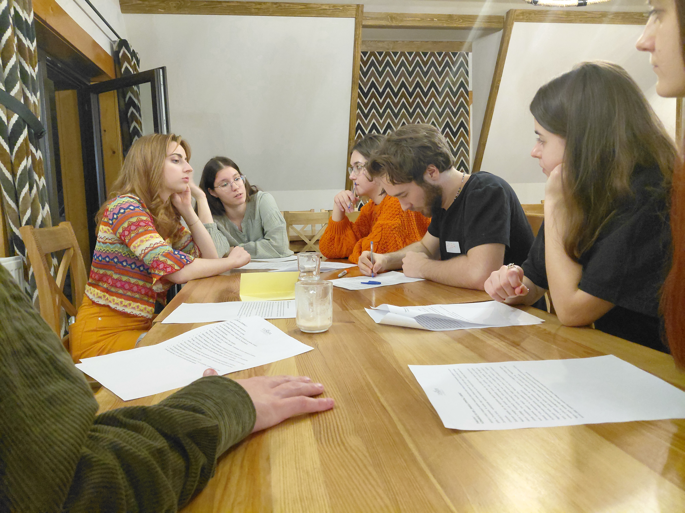
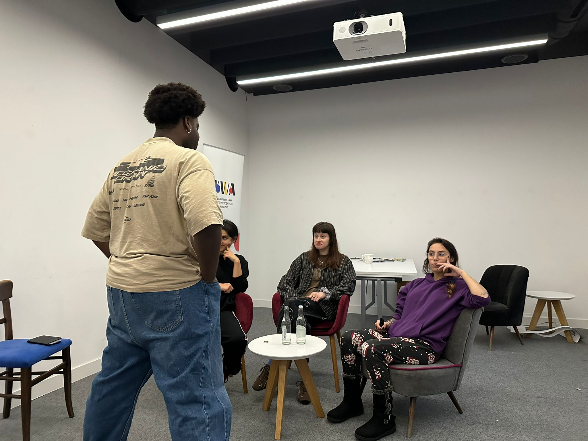